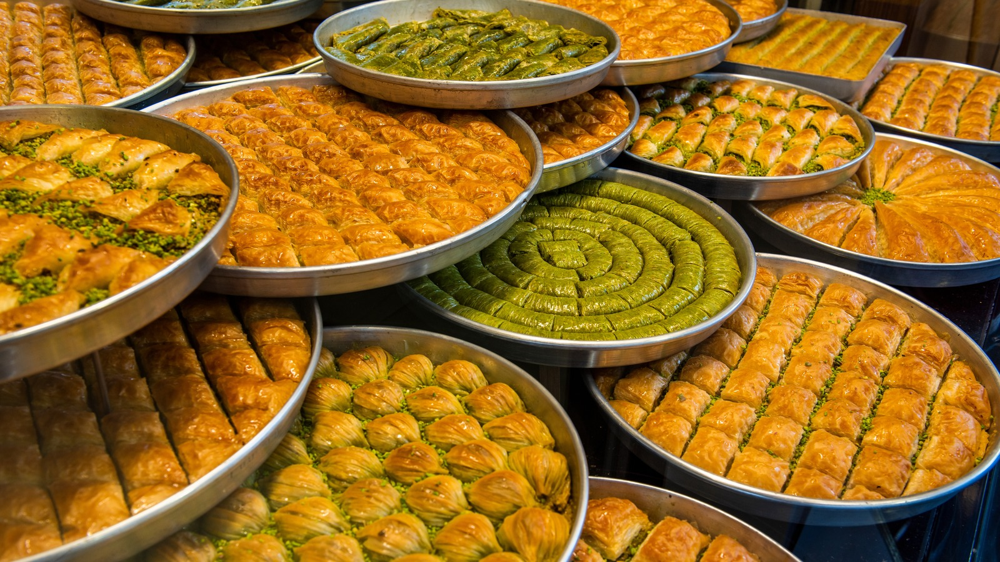
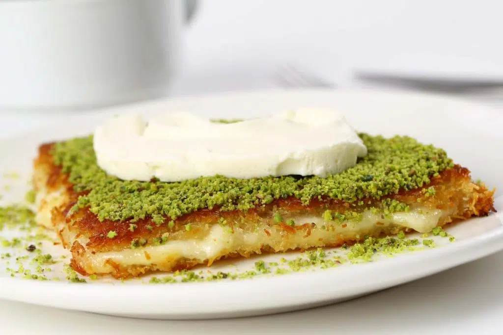
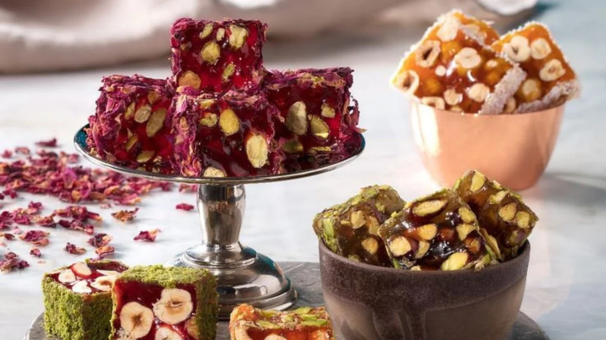
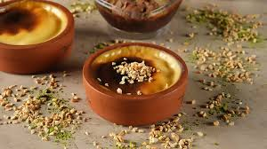
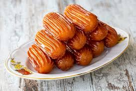
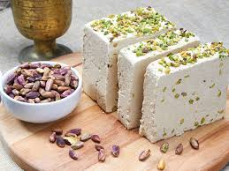
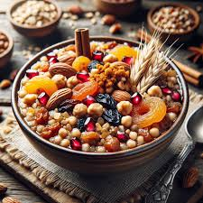

History of Turkish Desserts
Turkish desserts have been enjoyed in the country for centuries, with many of them being passed down through generations. From helva to lokma and tavuk gogsu, Turkish treats are known for their sweet flavors, creamy textures, and unique combinations of ingredients. The history of these desserts can be traced back to the Ottoman Empire when sweet dishes that were often served at banquets or special occasions. As time went on, more recipes were created as cooks experimented with different flavorings and ingredients to create new and exciting treats. Today, Turkish desserts are still just as popular as ever – bringing joy and to families traveling to Türkiye.
What are Common Flavors in Turkish Desserts?
Turkish desserts are renowned for their unique flavors and textures, which have been passed down through generations. Common ingredients used in Turkish desserts include honey, nuts, spices like cinnamon and cardamom, fruits such as dates and figs, dairy products such as yogurt or clotted cream, semolina flour, and sweetened pastry dough. These ingredients often come together to create a perfectly balanced combination of sweetness with a hint of tartness that makes these treats so special. Additionally, many traditional Turkish desserts also feature a crunchy texture from the addition of nuts or fried breadcrumbs.
Turkish Baklava
- Baklava Varieties
- Walnut Baklava
- Pistachio Baklava
- Şöbiyet (a cream-filled baklava)
- Carrot Slice Baklava
- Bülbül Yuvası (Nightingale's Nest)p
The pinnacle of Turkish desserts, this treat made from crispy layers of phyllo dough stuffed with ground pistachios is served everywhere in Türkiye. After being baked, it’s drenched with sweet, honey-like sugar syrup infused with lemon. The creamy, buttery smell emanates from each satisfying crunch. The sound, the taste, the texture – this is a sensory experience.
Notoriously made in the southeast city of Gaziantep, the name ‘baklava’ was registered by the European Commission as a Protected Geographical Indication. Invented in Ottoman Topkapı Palace kitchens in the middle ages, today, you can find versions with walnuts, almonds, hazelnuts, fresh clotted cream fillings, and even a chocolate version!
Kunefe
Also known as Knafeh to Arabic speakers, this iconic dessert has been around for centuries.
This is also made with string pastry (shredded wheat or kadayıf) soaked in sweet sugar syrup. However, the surprise is the creamy, unsalted goat’s cheese inside. Mostly popular in the Arab world, the Turkish version hails from Hatay, a region that borders Syria.

Lokum (Turkish Delight)
The star of the show. Not only literature, but this creative candy has also inspired artists of different industries: from being a precursor to the jellybean to even being included in perfumes. Previously called ‘rahat ul-hulküm’, which is derived from Ottoman Turkish, the Turkish Delight lives up to the name: the comfort of the throat. A small piece of heaven.
Turkish Rice Pudding (Firinda Sutlac)
There are rice puddings and then there’s “fırında sütlaç”. The concept is pretty basic: throw a rice pudding in the oven. The taste, however, is extraordinary. The pudding goes through the Maillard reaction to create a caramel-colored, sweeter version of the rice pudding.
Experts on Turkish gastronomy know the secret: the darker, the more burnt, versions are tastier than the slightly caramelized version. Typically served cold, they’re a delight to eat when warm too.

Turkish Tulumba
Turkish tulumba is sweet treat consisting of deep-fried dough soaked in syrup or honey, making it both crispy and sticky at the same time. It’s often served with a sprinkle of cinnamon on top for added flavor, as well as chopped nuts and dried fruits for texture.

Helva
Helva is a traditional Turkish dessert that has been enjoyed in Türkiye for centuries. This sweet treat consists of sesame paste, sugar, and butter cooked together until it reaches a thick consistency. It’s often served with honey or syrup on top and can be either soft and creamy or crunchy depending on how it’s prepared. Helva is one of the most popular desserts in Türkiye due to its unique flavor and texture combination – it’s both sweet and nutty at the same time. You may find this on the table for Turkish breakfast as well.

Ashure
Ashure is a traditional Turkish dessert made with grains, fruits and nuts that has been enjoyed in Türkiye for centuries. Ashure typically consists of ingredients like wheat berries, barley, chickpeas, dried apricots or dates, raisins, hazelnuts or walnuts – all boiled together with sugar syrup for sweetness.
It’s often served chilled with honey on top and can be either soft and creamy or crunchy depending on how it’s made.